€5,000 · Main goal
H3C multimaterial printing and R1 laser cutting, with separate machines for each process.

Søren Frost Staal · Product development · Denmark
I already make and sell Array. Now I want to turn it into a documented production project that other Bambu users can reproduce, adapt and sell.
At least three sizes · Ø21 / Ø37 / Ø45 cm
Array combines oak slats, 3D-printed rings, brass rods and magnets. I have made and sold several lampshades for pendants and table lamps.
The Ø37 version can be made today on an A1, with hand-cut and finished slats and four glued bottom-ring sections. I want to reduce that manual work as much as possible with an H2D Laser Combo or H3C + R1.
The table lamp shown here is an IKEA lamp from a local second-hand shop. It worked and only needed a new shade.
The slats can be removed for cleaning or replacement. Suitable leftover wood can be used to make new ones.
The existing Array is Ø37 cm. I will develop at least two more sizes: Ø21 and Ø45 cm.
I know these are popular sizes from my work in the lighting industry.
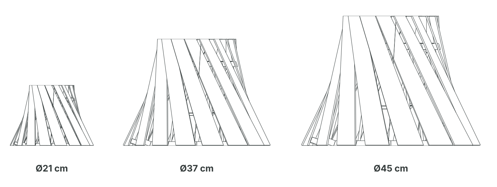
Interchangeable adapter rings will extend the existing E27 mount to relevant lampholders in other markets. Each size and fitting will be tested.
See the current Ø37 bill of materialsThe existing Ø37 version is the starting point. Development follows this order, with each improvement released after physical testing.
H3C multimaterial printing and R1 laser cutting, with separate machines for each process.
H2D Laser Combo as the alternative if the main goal is not reached.
Both funding goals are proposals for Bambu’s input, to be checked against the equipment setup, accessories, delivery and campaign costs. They are not a final project budget.
If the campaign is successfully funded, release the existing files and instructions as soon as it ends, with the commercial licence.
Test a one-piece bottom ring, repeatable slat cutting, printed cutting guides and glue-on threaded rod ends. Compare the hands-on work before and after.
Develop and physically test the Ø21 and Ø45 versions and adapter rings for relevant lampholders.
Then test wood PLA with veneer, acrylic, lithophanes, ceramic slats and custom packaging. Release the working solutions as project updates.
Test wood-PLA slats with blade-cut veneer glued on afterwards, including a workflow for A2L.
Print moulds for ceramic slats. Forming and kiln firing happen separately.
Personalise the slats with cut-out patterns and engraved details.
Explore printed slats that reveal images and patterns when illuminated.
Cut clear-acrylic slats on R1, with or without engraving. Test blade-cut vinyl decoration and develop custom packaging with protective inserts.
Develop 3D-printed cutting guides and mitre boxes so makers can cut the slats without a laser.
Test 3D-printed threaded end fittings that glue onto plain brass rods, as an alternative to heat-set inserts and threading dies. Also investigate other printed connections to reduce purchased hardware.
Improvements and variants will be released as ongoing updates, as I solve each part and physically test it.
Print, blade-cut and laser-cut on one machine, changing setup between processes. Test wooden slats, engraving and veneer.
Separate machines for multimaterial printing and CO₂ laser cutting. Develop flexible joints, clear-acrylic slats with or without engraving, and our own packaging.
Tool availability depends on the printer and selected bundle.
| Setup | Tool / accessory | What it opens for Array |
|---|---|---|
| A2L | Optional cutting module + pen | Thin veneer and vinyl cut to shape; drawn assembly marks. Veneer over wood PLA needs testing. |
| H2S | Optional cutting module; compatible laser configuration | Blade-cut decoration and veneer; laser-cut wood and engraving with the appropriate laser equipment. |
| H2D Laser Combo | Blade / pen module and diode laser, per bundle | One-machine wood cutting, engraving and blade-cut vinyl. Print and cutting processes share the machine. |
| H2C | Vortek hotend changing; optional cutting module / laser configuration | Material and support combinations, plus veneer, decoration and wood processing when fitted with the relevant modules. |
| H3C + R1 | H3C: CutTool / DrawTool / DebossTool; R1: dedicated CO₂ laser | Multimaterial and flexible printed connections; blade-cut / drawn / debossed details with suitable tools. R1 adds custom packaging, wooden slats and clear acrylic with or without engraving. |
H3C uses its own crafting tools. Vinyl is blade-cut; veneer thickness and cutting profiles need testing.
12 of 47 pictures
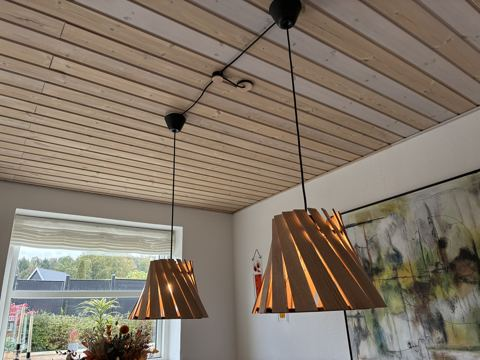
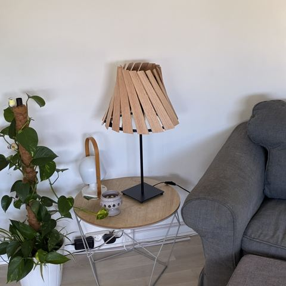
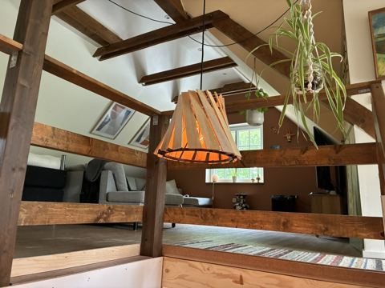
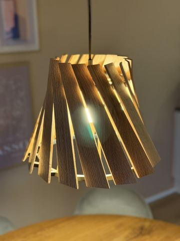
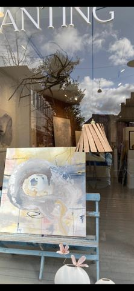
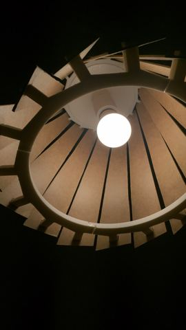
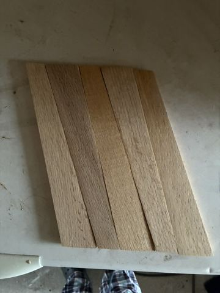
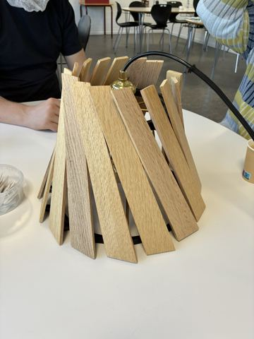
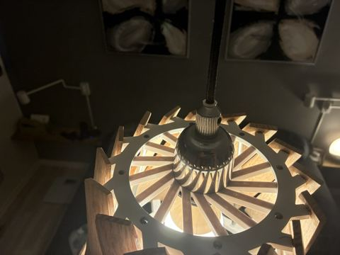
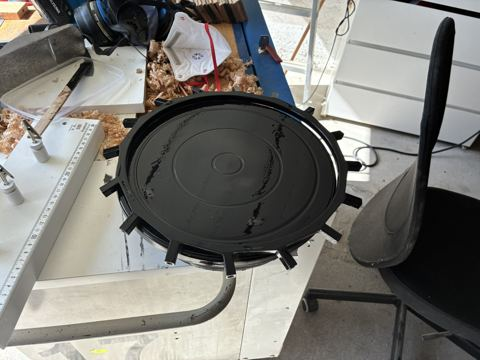
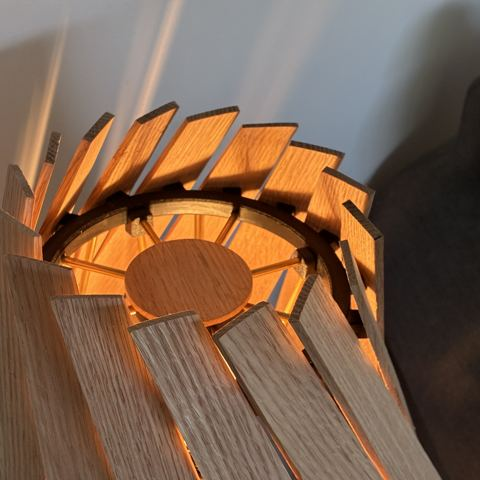
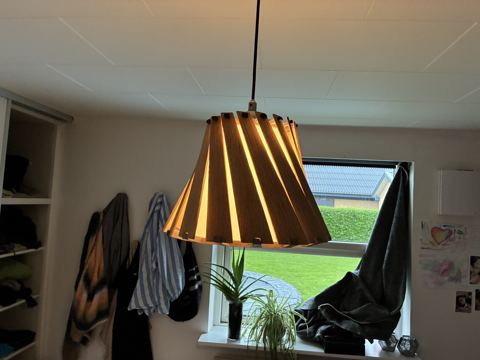
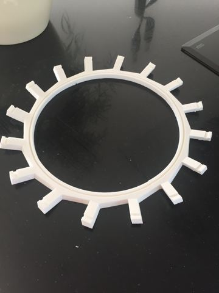
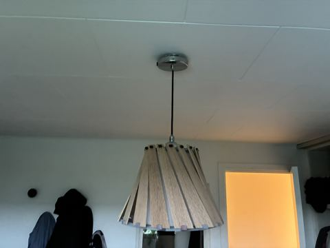
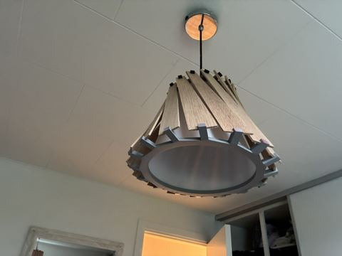
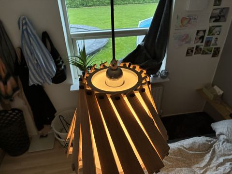
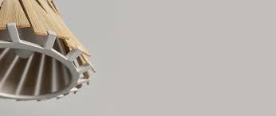
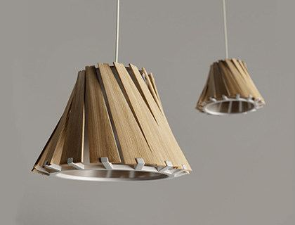
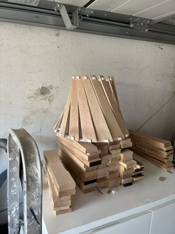
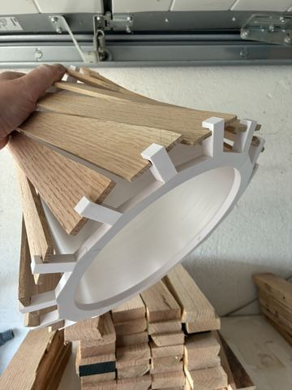
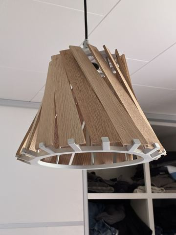
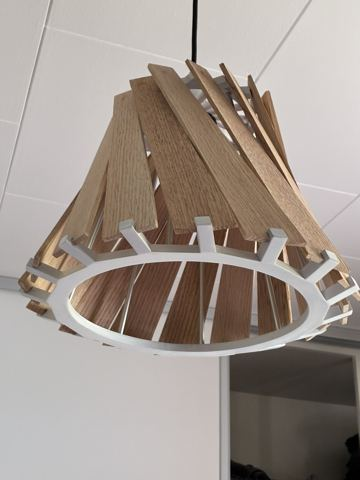
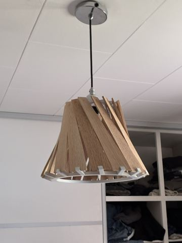
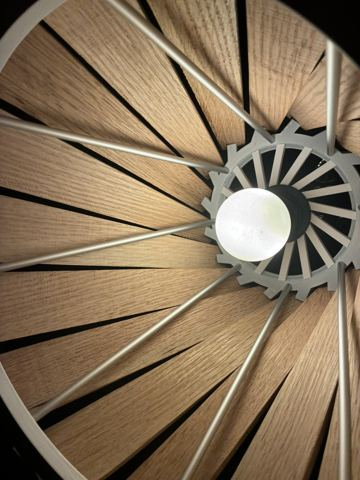
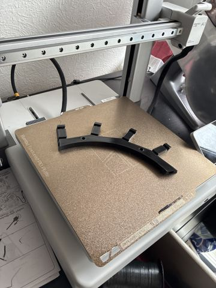
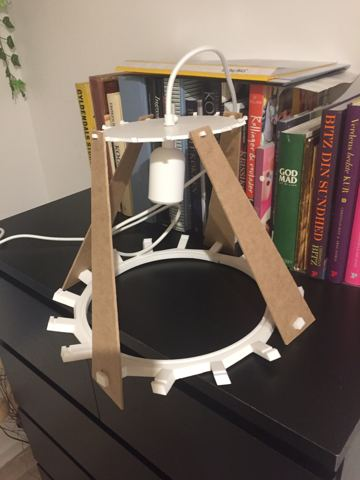
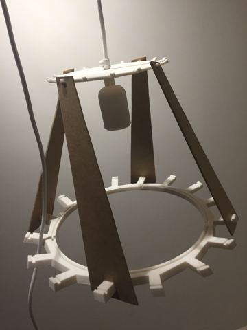
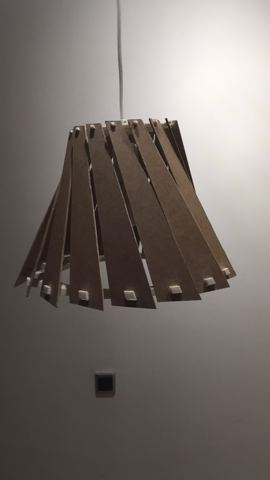
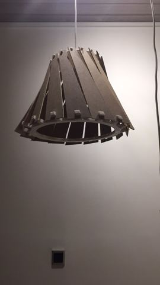
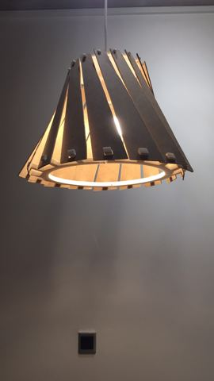
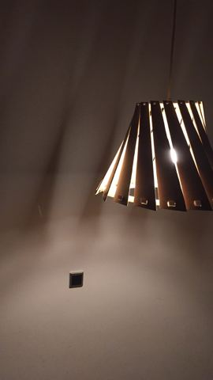
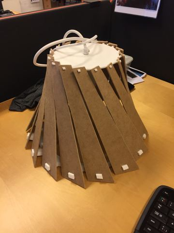
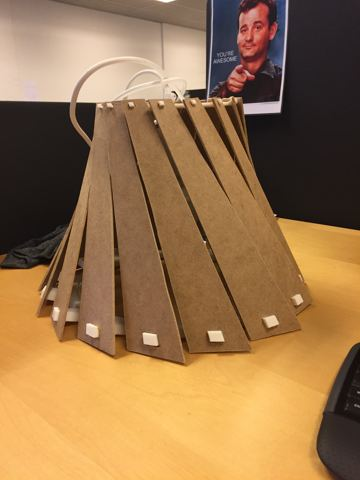
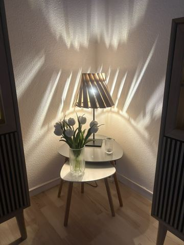
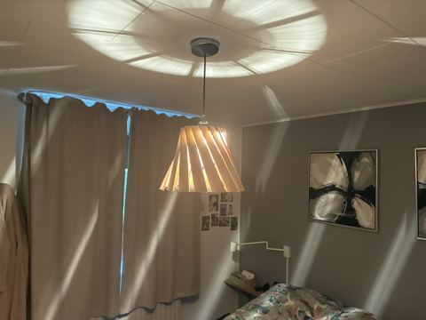
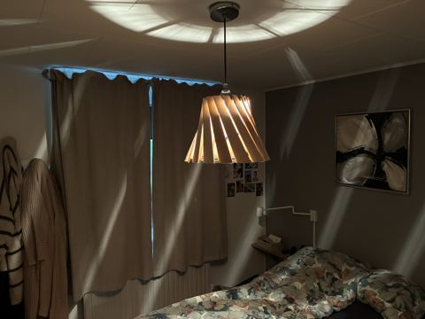
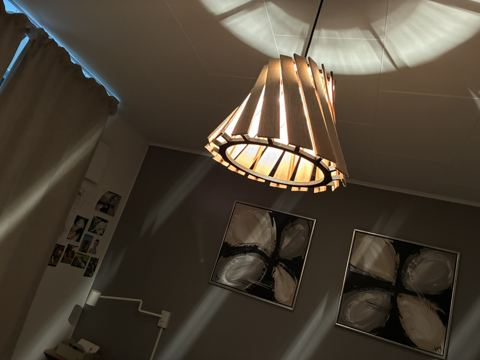
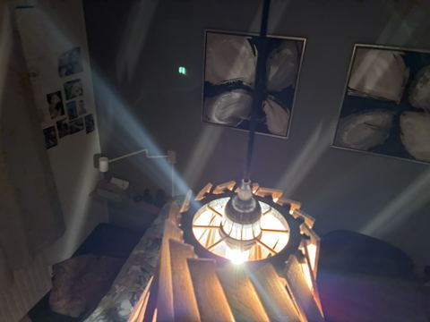
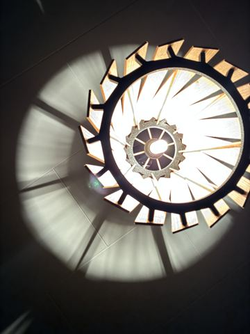
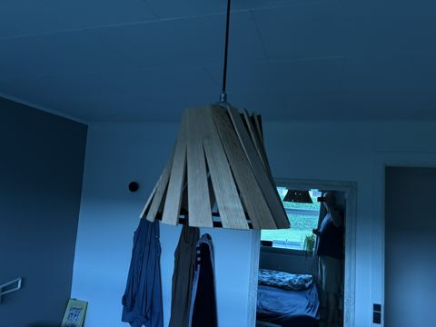
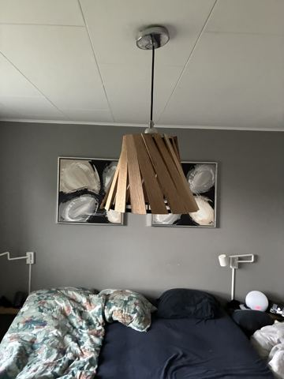
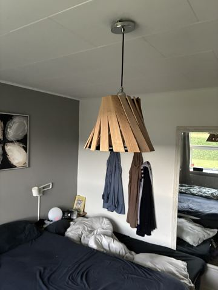
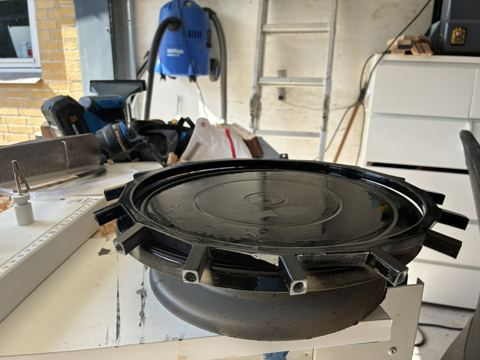
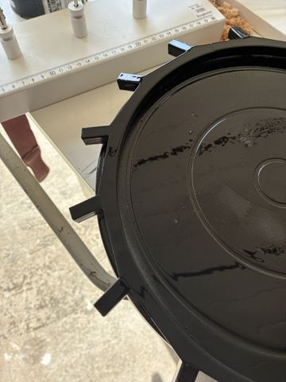
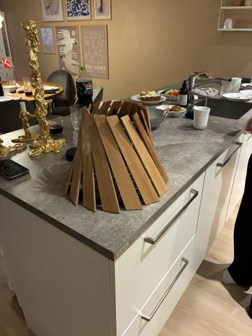
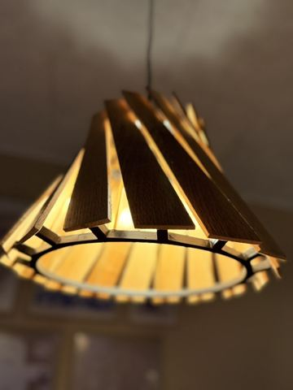
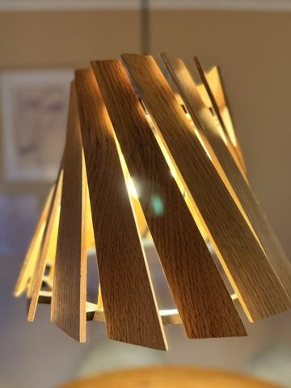
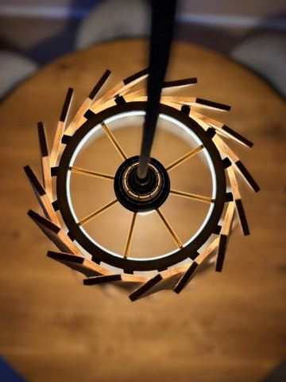
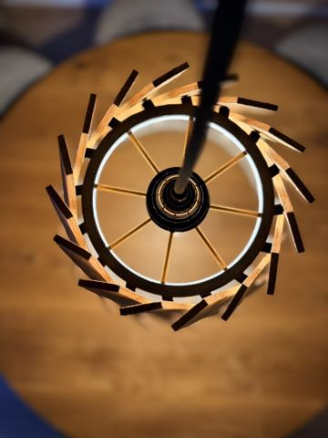
The campaign will include professional renders and animation. These Cycles viewport captures show work in progress; the photos document lamps I have already made.
Array began with RenderWeekly’s pendant-lamp challenge and was featured by RenderWeekly. I shared the original design on 1 May 2019.
See the original Instagram postIf the campaign is successfully funded, every backer is guaranteed the existing Ø37 cm version. The files and instructions will be released as soon as the campaign ends, with a commercial licence to make and sell physical lampshades. The same licence covers all improvements and new variants released in subsequent project updates.
Digital files and a licence; no physical lamp is shipped.
The proposed backer price is €59. Based on my material costs and past selling prices, a first sale could cover the licence and materials, before labour, fees, tax and other costs. This is not a promise of earnings.
Materials for my current version cost about €50. I have sold finished lampshades for €200–€400; labour and other costs come out of that difference.
The current Ø37 lampshade with 16 slats and a magnetic top cover.
200 g filament · 16 slats · 8 brass rods · 8 brass pins · 8 M5 inserts · 72 magnets.
| Item | Quantity | Specification / use |
|---|---|---|
| Filament for all printed parts | 200 g | Total for the 16 printed parts. |
| Slats | 16 pcs | Current version: 3 mm oak; CAD profile approximately 300.4 × 48.2 mm. Other suitable cuttable materials or 3D-printed slats can be used. Printed slats require extra filament. Allow cutting and finishing waste. |
| Brass rod stock | 2.5 m | Approximately 2.5 m of Ø5 mm brass stock for eight core rods and eight top/socket pins. |
| Slat and ring magnets | 64 pcs | Ø6 × 3 mm. 32 in the slats (two each), 16 in the top ring and 16 in the bottom ring. |
| Thin top-cover magnets | 8 pcs | Four pairs of Ø6 × 1 mm magnets for the top cover. |
| M5 knurled threaded inserts | 8 pcs | Four heat-set into the bottom ring; four used as upper rod stoppers. |
| CA / superglue | As needed | For CA-gluing the split ring, alignment dowels and other bonded components. Quantity depends on the joints and application. |
| Primer | As needed | For the current painted printed-part workflow; use a product compatible with the printed material. |
| Paint | As needed | Finish for the printed parts in the current version; consumption depends on coverage, colour and number of coats. |
| Sandpaper | As needed | For smoothing printed joints, brass ends and wooden slats as appropriate. |
The lists below use the stock above. Glue, primer and paint are per-lamp consumption, not full containers.
| Item | Quantity | Specification / use |
|---|---|---|
| Bottom-ring quarters | 4 pcs | Bond together with the alignment dowels. |
| Alignment dowel halves | 8 pcs | Bond in pairs to make four complete dowels. |
| Structural top ring | 1 pcs | Upper structural ring and magnet seats. |
| Magnetic top cover | 1 pcs | Large cover with four magnet pairs. |
| Socket carrier ring | 1 pcs | Carrier for the purchased E27 fitting. |
| Socket carrier cover | 1 pcs | Cover for the socket carrier. |
Glue the eight dowel halves into four dowels. The current bottom ring has four sections.
| Item | Quantity | Specification / use |
|---|---|---|
| Plain brass spacer rods | 4 pcs | Ø5 mm; CAD axial span approximately 203.0 mm. Finish to the CAD geometry. |
| Brass rods with M5 threaded ends | 4 pcs | Ø5 mm; CAD axial span approximately 203.8 mm. Threaded portions and final fit follow CAD. |
| Top-ring/socket brass pins | 8 pcs | Eight Ø5 mm brass locking pins between the top ring and socket carrier. Finished length approximately 56.1 mm each; cut from the brass stock above. |
CAD reference lengths; allow extra stock for cutting and finishing.
| Item | Quantity | Specification / use |
|---|---|---|
| Printed table/floor-lamp connectors | 4 pcs | For the alternative adapter assembly. |
| Printed table/floor-lamp mount | 1 pcs | Use with the four connectors. |
| Additional adapter brass rods | 4 pcs | Ø5 mm; cut to the selected adapter CAD. Allow additional stock. |
Add these parts only when the lamp base needs the adapter.
One suitable lamp base or E27 pendant set with retaining ring, cord and strain relief, plus a compatible LED bulb.
LED only, maximum 11 W. See the safety information below.
Read the safety scope3D printer; wood saw and plane; metal saw or rod cutter; metal file; sandpaper; M5 threading die; heat-insert soldering tool. Adhesive and paint application tools are also needed.
Array is a non-electrical lampshade for LED bulbs rated at a maximum of 11 W. This limit is based on the design’s safety clearance around the bulb.
Use suitable purchased electrical fittings and follow their manufacturers’ instructions. Incandescent and halogen bulbs are outside the intended use.
The commercial licence covers the design. Sellers remain responsible for product safety and the requirements of their market.
I would welcome Bambu Lab / MakerWorld’s input on the €59 backer price, the €5,000 H3C + R1 goal and the €3,000 H2D Laser Combo alternative. The equipment and final budget should support a production project other makers can reproduce and sell.
An alternative is an equipment sponsorship: Bambu supplies the equipment at no cost, and I publish the project exclusively on MakerWorld, with free personal printing and a commercial licence at a price MakerWorld sets.
My other projects include a linear clock, modular yarn shelves and a grow box/grow light. I enjoy finding unexpected, practical uses for the tools I work with.
Søren Frost Staal
Contact and professional profiles
Dette er en projektbeskrivelse, ikke en færdig byggevejledning. Materialer, varme og elektriske dele skal vurderes til den konkrete opbygning. Siden har ingen upload eller formularafsendelse.
Lokale skrifter, billeder, CSS og JavaScript. Ingen konto eller ekstern API. Projektets fremtidige maskiner og købedele beskrives på siden.
The application video and English captions are served directly from extruda.dk. The player has no autoplay and uses no external video service.
The extended archive uses locally hosted pictures. Videos play only when started; the workshop film contains music. Full-size gallery images load when opened. Instagram opens as an external link; no social-media tracking embed is used.